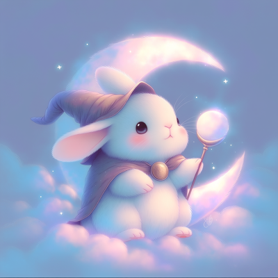

夢占い辞典
見た夢の内容を入力するだけで、夢の意味を無料で占えます。

毎朝の夢を記録すると、心の変化が見えてきます。
📓 夢日記をつけるなら無料アプリ（Google Play）動物の夢
- 犬
- 猫
- 蛇
- 馬
- 牛
- 豚
- 羊
- ウサギ
- 熊
- 狼
- 狐
- 象
- 虎
- ライオン
- キリン
- サル
- ネズミ
- カエル
- サメ
- クジラ
- イルカ
- 魚
- 金魚
- 鳥
- ハト
- カラス
- フクロウ
- ワシ
- 白鳥
- ペンギン
- タコ
- 蜘蛛
- 蝶
- 蜂
- 亀
- ダチョウ
- フラミンゴ
- コウモリ
- ハリネズミ
- オオカミ
- パンダ
- チーター
- サイ
- カメレオン
- オウム
- インコ
- アリ
- クワガタ
- カブトムシ
- ホタル
- カモメ
- ツバメ
- ミツバチ
- トンボ
- セミ
- ロバ
- ヤギ
- ヒツジ
- クマノミ
- ザリガニ
- コイ
- フグ
- ハムスター
- モグラ
- シカ
- イノシシ
- サケ
- アザラシ
- ラッコ
- ヒョウ
- アリクイ
- ペリカン
- クジャク
- フェニックス
- ヒトデ
- クラゲ
- エビ
- カニ
- マンタ
- カメレオン座
- チンパンジー
- ゴリラ
- ラマ
- アルパカ
- マングース
- ナマケモノ
- タスマニアデビル
- アンコウ
- タツノオトシゴ
- コアラ
- カンガルー
- カバ
- カメ
- クマ
- ガゼル
- タヌキ
- キツネ
- チョウ
- コウノトリ
- テントウムシ
- ハチドリ
- 犬に追いかけられる
- 犬に噛まれる
- 犬を飼う
- 犬がなつく
- 犬が死ぬ
- 犬を助ける
- 猫に引っかかれる
- 猫を拾う
- 猫が死ぬ
- 蛇に噛まれる
- 蛇に追いかけられる
- 蛇を見る
- 蛇を触る
- 蛇に巻きつかれる
- 蛇を殺す
- 白い蛇
- 大きな蛇
- 蛇がたくさん
- 蛇が脱皮する
- ペットが死ぬ
- 虫
- ゴキブリ
- 蜂に刺される
- 黒猫
- 白猫
- 子猫
- 赤い蛇
- 金の蛇
- 緑の蛇
- 白い犬
- 黒い犬
- 茶色の犬
- 白い馬
- 青い鳥
- 白い鳥
- 金色の魚
- 赤い金魚
- 白い鳩
自然の夢
行動の夢
- 飛ぶ
- 落ちる
- 走る
- 泳ぐ
- 逃げる
- 戦う
- 叫ぶ
- 泣く
- 笑う
- 食べる
- 探す
- 登る
- 迷う
- 隠れる
- 転ぶ
- 助ける
- 歌う
- 踊る
- 結婚する
- 別れる
- 泣き叫ぶ
- 抱きしめる
- 喧嘩する
- 和解する
- 盗む
- 贈り物をする
- 引越し
- 料理する
- 掃除する
- 書く
- 描く
- 読む
- 眠る
- 旅行する
- 登山
- 潜る
- 船旅
- 砂漠の旅
- 森の中の旅
- 宇宙の旅
- 結婚式
- 葬式
- 誕生日
- 卒業
- 入学
- 就職
- 転職
- 失業
- 昇進
- 会議
- プレゼン
- 交渉
- 裁判
- 選挙
- 発明する
- 失敗する
- 成功する
- 贈られる
- 挑戦する
- 諦めない
- 決断する
- 許す
- 信じる
- 数える
- 集める
- 捨てる
- 修理する
- 建てる
- 壊す
- 分かち合う
- 待つ
- 選ぶ
- 贈る
- 守る
- 学ぶ
- 教える
- 癒す
- 変わる
- 植物を育てる
- 水をやる
- 応援する
- 呼ぶ
- 探検する
- 積み上げる
- 見つめる
- 再会する
- 悲しむ
- 作る
- 謝る
- 歩く
- 話す
- 飲む
- 買い物
- 勉強
- 運転
- 遊ぶ
- 働く
- 裸になる
- 遅刻する
- 試験に落ちる
- 好きな人に告白する
- 好きな人に振られる
- 妊娠する
- 事故に遭う
- 知らない人に追いかけられる
- 殺される
- 復縁する
- キス
- 手をつなぐ
- デート
- 抱きしめられる
- 髪を切る
- 化粧
- 引っ越す
- トイレを探す
- お金を拾う
- ご飯を食べる
- お腹いっぱい食べる
- 食べ物をもらう
- ケーキを食べる
- チョコレートをもらう
- 甘いものを食べる
- 肉を食べる
- 握手する
- 部屋を掃除する
場所の夢
人物の夢
体の夢
乗り物の夢
物の夢
食べ物の夢
状況の夢
- 追いかけられる
- 試験
- 死
- 遅刻
- 迷子
- 溺れる
- 閉じ込められる
- 宝くじ
- 火事
- 津波
- 空を飛ぶ
- 空が落ちてくる
- タイムスリップ
- 試合
- 崩壊
- パーティー
- 宝探し
- 洪水
- 停電
- 忘れる
- 迷子になる
- 面接
- 引っ越し
- 旅行
- 迷宮
- レース
- 競争
- 告白
- 和解
- 誓い
- 宣言
- 前の職場
- 道に迷う
- 試験に遅刻する
- 再会
- 宝くじに当たる
- 告白する
- 失業する
- 元カレと復縁する
- プロポーズ
- 電車に乗り遅れる
- 忘れ物
- 逮捕される
- 仕事を辞める
- 入院
- 手術
- 出産
- 授業
- 宿題
- 歯医者
- 注射
- 金縛り
- 泳げない
- クリスマス
- 彼氏と別れる
- 彼女と別れる
- 雨漏り
- 流される
- 事故
- 車をぶつける
- ブレーキが効かない
- 飛行機が落ちる
- 船が沈む
- 渋滞
- パンク
- 信号
- 元カノと復縁する
- 浮気される
- 浮気する
- 高いところから落ちる
- エレベーターが落ちる
- 階段から落ちる
- 飛べない
- 殺人犯に追いかけられる
- 有名人に会う
- 有名人と話す
- 芸能人と付き合う
- 有名人と写真を撮る
- 家が壊れる